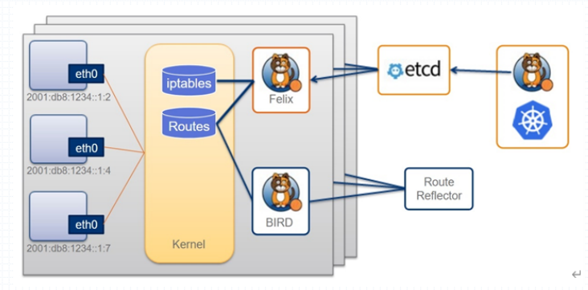
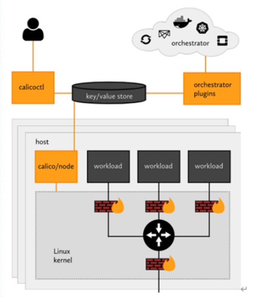

Calico网络插件
Calico的全称为ProjectCalico。
Calico是三层虚拟网络解决方案(BGP)。每一个节点都是一个vRouter。每个节点上的pod都被当作该路由器后端的一个终端设备为其分配一个IP地址。而各节点上的vRouter都需要通过BGP协议学习生成路由规则，从而实现各节点上的pod之间互联互通。
BGP通信模型
BGP通信模型有两种：
BGP peer（小规模网络使用）：点对点BGP，如果一个网络中有10个BGP，那是1:9的通信模型，这样将形成n*(n-1)个通信网络。所以在次模型下如果网络规模较大BGP路由学习报文将会占据很大的网络带宽，因而在大规模网络下需要使用另外一种通信模型BGP Reflector（大规模网络使用）：反射器模型，所有节点都将自己所有拥有的路由信息汇总给Reflector，由Reflector用1:n-1的方式向外进行反射，所以称之为BGP反射器。
小规模网络中BGP peer不存在单点问题，BGP peer宕机会有其他的进行替代。
大规模网络中BGP Reflector需要做冗余。
BGP模型要求所有节点在同一个二层网络中。不一定所有的底层网络都支持BGP，如在阿里云上购买了虚拟机自己部署k8s网络时，阿里云底层的网络不支持BGP协议。
为了确保公有云上也能使用calico，calico还提供了另外两种解决方案：
- Overlay Network：
- IPIP：用IP报文来封装IP报文，因此其开销更小。
- VXLAN：类似于Flannel的VXLAN启用DirectRouting的网络模型，Calico也支持混合使用路由和叠加网络模型。如果节点在同一子网内使用BGP，如果跨子网则使用VxLan。
Calico的架构

在整个k8s集群上有多个节点，每个节点存在多个pod，这些Pod与Flannel插件中host-gw模型的Pod有一个不同之处在于flannel的pod在连如网络时使用的是将网卡一半在pod一半接入网桥实现的，而calico在接入网络时并非使用一对虚拟网卡来接入，而是直接接入了宿主机的内核。其需要借助内核中的Iptables和Routes表来完成其中的部分功能。
整个Calico有以下几个组件组成：
- 每个节点都需要运行以下组件：
Felix：需要运行于各节点之上的守护进程，主要负责完成接口管理、路由规划、acl规划（也就是网络策略，其需要借助iptables来实现）、状态报告。BIRD：是vRouter的关键实现，整个BGP的路由表是由BIRD生成的，而路由规划是Felix完成的。而BIRD自身可以扮演两种角色，默认之启用了一种：BGP客户端（默认启用）：需要运行于每个节点，负责将Felix生成的路由信息载入内核并通告到整个网络中；BGP Reflector：专用反射各BGP客户端发来路由信息；将 N –> N-1 转为 N –> 1 的模型
- 在节点之外需要运行以下组件：
etcd：Calico也和Flannel一样需要依靠etcd来存一些自身的状态数据，其也可以像Flannel一样将API Server当为自身的存储后端。大规模集群中建议额外部署etcd专用于Calico集群，以免和k8s性能上冲突。Route Reflector：路由反射器Calico编排系统插件：Calico自己不仅仅支持给k8s提供虚拟网络，它也支持openshift、openstack。所以Calico是一个通用的虚拟网络，不仅仅能适用到k8s上。要让calico能适用于k8s，需要一个calico的编排系统插件让etcd和calico插件之间能都双向转换通信。
Calico部署组件
Calico部署到K8S集群上时，需要用到两个组件：
- calico-node：类似于Flanneld需要运行于每个节点之上。calico-node中封装了Felix和BIRD。
- calico-kube-controller：运行于k8s集群上的中央控制系统。由它来负责Calico和整个kubernetes的协同，也包括其他核心功能的实现。

Calico部署
Calico有两种部署方式，一是让calico/node独立运行于Kubernetes集群之外，但calico/kube-controllers依然需要以Pod资源运行中集群之上；另一种是以CNI插件方式配置Calico完全托管运行于Kubernetes集群之上，类似于我们前面曾经部署托管Flannel网络插件的方式。对于后一种方式，Calico提供了在线的部署清单，它分别为50节点及以下规模和50节点以上规模的Kubernetes集群使用Kubernetes API作为Datastore提供了不同的配置清单，也为使用独立的etcd集群提供了专用配置清单。但这3种类型的配置清单中，Calico默认启用的是基于IPIP隧道的叠加网络，因而它会在所有流量上使用IPIP隧道而不是BGP路由。以下配置定义在部署清单中DaemonSet/calico-node资源的Pod模板中的calico-node容器之上。
官方部署文档：
https://docs.projectcalico.org/getting-started/kubernetes/self-managed-onprem/onpremises
需要注意：
calico的部署以50个节点为界限，分为3种部署方式
- Install Calico with Kubernetes API datastore, 50 nodes or less
- Install Calico with Kubernetes API datastore, more than 50 nodes
- Install Calico with etcd datastore
此处以50个节点以下方式来部署calico
1.下载calico的资源清单
1 | curl https://docs.projectcalico.org/manifests/calico.yaml -O |
2.应用配置清单
在应用配置清单前需要注意如果Pod的CIDR为192.168.0.0/16，那么此配置清单可以直接kubectl apply进行部署，如果非此网段则需要对calico.yaml进行修改。
此前部署k8s集群时，部署了flannel并且使用的Pod的CIDR为10.244.0.0/16，现在则需要将其配置清单内的CALICO_IPV4POOL_CIDR进行修改，以确保其和Pod网段相同。
1 | root@k8s-master01:~# vim calico.yaml |
3.资源清单修改完毕后可以进行部署，但若之前使用了flannel插件则需要将其删除。
1 | root@k8s-master01:~# kubectl apply -f calico.yaml |
IPIP模型
calico默认使用的是IPIP模型
1 | # 查看路由信息 |
查看calico的地址池
1 | root@k8s-master01:~# kubectl get ippools -o yaml |
验证ipip工作逻辑
1.在k8s-node01上进行抓包
1 | root@k8s-node01:~# tcpdump -i eth0 -nn ip host k8s-node01 and host k8s-node03 |
IPIP模型总结
Pod接入网络的方式与Flannel不同，它不使用网桥接入，而是直接放入宿主机内核并直接关联到宿主机上。因此它需要路由条目来支撑，每一个Pod都有个单独的路由条目，指明自己的报文要通过对端的接口（calixxxx）出来后到达宿主机上，而接口都是内核管理的，所有接口已经在宿主机内核中（tunl0），接下来由内核决定如何路由。IPIP模式下其要经过tunl0接口出去。